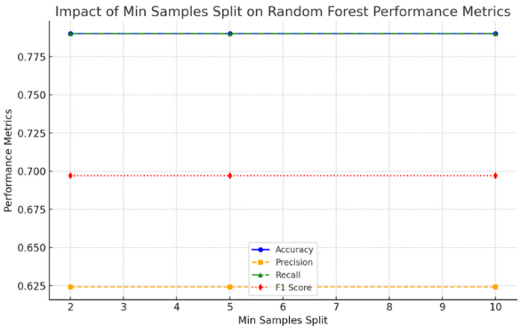
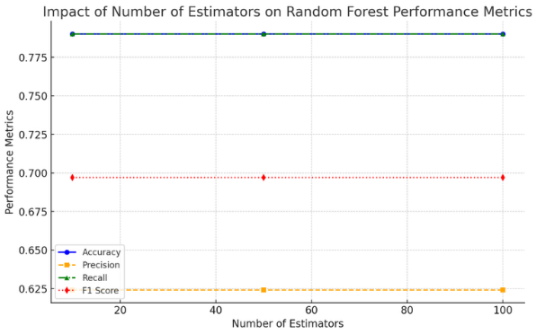
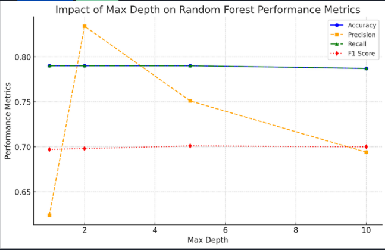
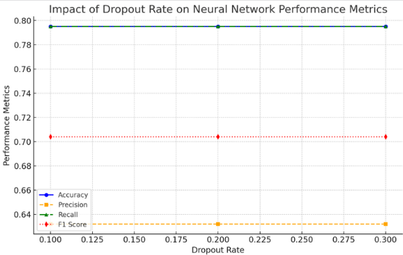
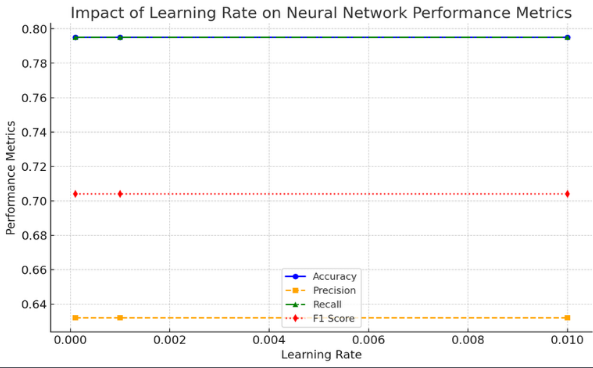
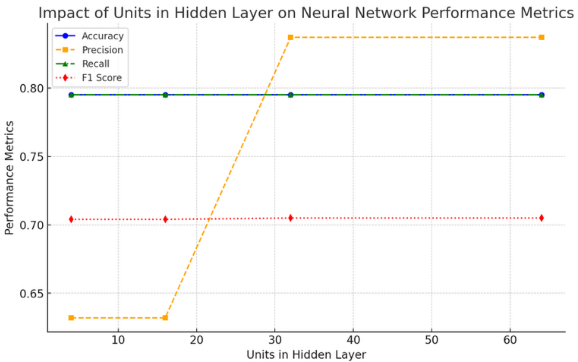
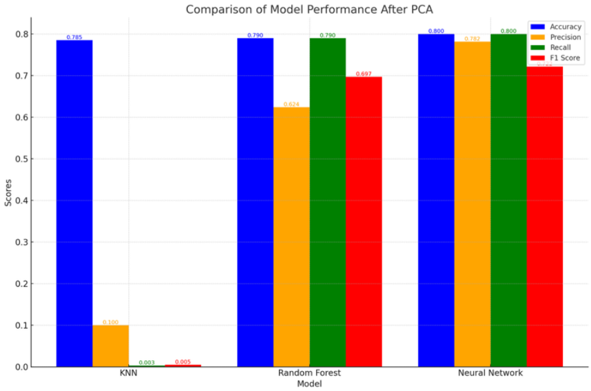
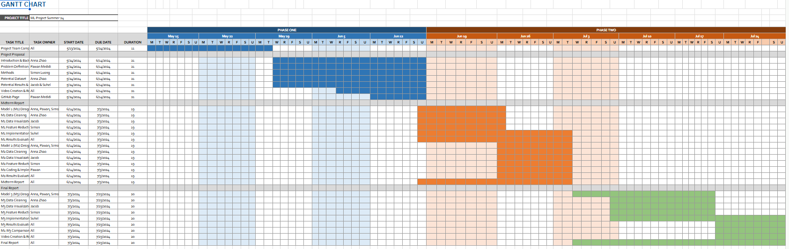

Pawan Medidi, Anna Zhao, Simon Luong, Jacob Zeigler, Suhel Keswani
Introduction/Background
Over the last decade as social media has become increasingly developed, so has the world of making bots within them. They have become increasingly complex, varied, and abundant, and their volume and influence have sparked a lot of conversation. Our team aims to classify whether a comment on a social media platform is a human or a bot.
Literature Review
As machine learning advances, numerous studies have emerged on bot detection, each with unique methodologies. Prior reviews highlight that models based on random forests, support vector machines, and convolutional neural networks excel in detecting Twitter bots. Feed Forward Neural Networks, support vector machines, gradient boosting, and multinomial naive Bayes are effective against spam bots. Ongoing research aims to enhance deep learning methods by integrating the best features of existing models to improve text feature utilization and anomaly detection. One study using similar methods to our projected ones looks at how detecting twitter bots can be done more effectively with reduced features finding that only 5 features (number of tweets, followers, mutuals, likes, and lists included) was effective for detecting bots compared to a full feature larger set.
Dataset Description
We utilized the TwiBot-20 dataset, developed at Washington University, which includes verified human users and various bots, comprising approximately 230K accounts. This dataset encompasses complete post histories and following relationships. For each user, it contains profile information, the 200 most recent tweets, 20 random neighbors/followers, and a bot status indicator. Currently, traditional bot detection methods have proven inconclusive in this dataset.
Problem: Social media platforms are increasingly filled with bots generating vast amounts of content. These bots range from simple spambots to sophisticated conversational bots that engage in harmful activities. Their ability to influence public opinion, spread misinformation, and undermine genuine user interactions poses significant risks.
Motivation: Identifying and categorizing whether a comment is a bot can mitigate the spread of false information, preserve the integrity of social media conversations, and protect public opinion and democratic processes from manipulation.
Solution: We propose a Bot Comment Classification Analysis system using machine learning and natural language processing to identify and classify whether a comment is a human or bot based on their commenting styles. This system will analyze linguistic patterns, posting behaviors, and engagement metrics to distinguish humans from bots, and provide real-time detection to mitigate bot activity. This approach aims to enhance the understanding of bot behavior and contribute to a more trustworthy social media environment.
Methods
We utilized the TwiBot-20 dataset, developed at Washington University, which includes verified human users and various bots, comprising approximately 230K accounts. For this project, we focused on the following machine learning algorithms: K-Nearest Neighbors (KNN), Random Forest, and a Neural Network model.
Our preprocessing methods included:
Tokenization
Lemmatization
Removing non-alphanumeric characters
Truncating text to a fixed length
Using MobileBERT for feature extraction
We utilized Scikit-Learn and TensorFlow libraries for model implementation. Our evaluation metrics included accuracy, precision, recall, and F1 score.
Results and Discussion
K-Nearest Neighbors (KNN) Classifier
Accuracy: 0.785
Precision: 0.100
Recall: 0.003
F1 Score: 0.005
The KNN model achieved an accuracy of 78.5%, which is fairly good. However, the precision, recall, and F1 scores are very low. This suggests that while the model correctly classifies a significant number of tweets overall, it struggles to correctly identify and distinguish between the two classes (human vs. bot).
Random Forest Classifier
Accuracy: 0.790
Precision: 0.624
Recall: 0.790
F1 Score: 0.697



The Random Forest model showed improved performance with an accuracy of 79.0%, precision of 62.4%, recall of 79.0%, and an F1 score of 69.7%. This indicates that the model is better at distinguishing between humans and bots compared to KNN.
Neural Network Model
Accuracy: 0.795
Precision: 0.632
Recall: 0.795
F1 Score: 0.704



The Neural Network model achieved the highest accuracy at 79.5%, with a precision of 63.2%, recall of 79.5%, and an F1 score of 70.4%. This indicates that neural networks, with their capacity to learn complex patterns, performed the best among the models we tested.
Comparison of Models

Model
Accuracy
Precision
Recall
F1 Score
KNN
0.785
0.100
0.003
0.005
Random Forest
0.790
0.624
0.790
0.697
Neural Network
0.795
0.632
0.795
0.704
From our analysis, the Neural Network model showed the best performance, followed by the Random Forest model. The KNN model, while simple and intuitive, did not perform well for this classification task.
Next Steps
Further optimize hyperparameters for the Random Forest and Neural Network models to potentially improve their performance.
Explore other advanced models like Transformers which might offer better performance in handling text data.
Consider using more sophisticated feature engineering techniques to enhance the model's ability to distinguish between human and bot comments.
Gantt Chart

Contribution Table
Name
Final Contributions
Anna Zhao
Introduction/Background, Dataset Description, Data Preprocessing
Pawan Medidi
Problem Definition, Methods, GitHub Repository
Simon Luong
Model Implementation, Data Analysis, Data preprocessing
Suhel Keswani
Results and Discussion, Visualizations
Jacob Zeigler
Slides setup and Visualizations
References
[1] J. V. Fonseca Abreu, C. Ghedini Ralha and J. J. Costa Gondim, "Twitter Bot Detection with Reduced Feature Set," 2020 IEEE International Conference on Intelligence and Security Informatics (ISI), Arlington, VA, USA, 2020, pp. 1-6, doi: 10.1109/ISI49825.2020.9280525.
[2] M. Aljabri, R. Zagrouba, A. Shaahid, F. Alnasser, A. Saleh, and D. M. Alomari, “Machine learning-based social media bot detection: a comprehensive literature review,” Social Network Analysis and Mining, vol. 13, no. 1, Jan. 2023, doi: https://doi.org/10.1007/s13278-022-01020-5.
[3] K. Hayawi, S. Saha, M. M. Masud, S. S. Mathew, and M. Kaosar, “Social media bot detection with deep learning methods: a systematic review,” Neural Computing and Applications, vol. 35, Mar. 2023, doi: https://doi.org/10.1007/s00521-023-08352-z.